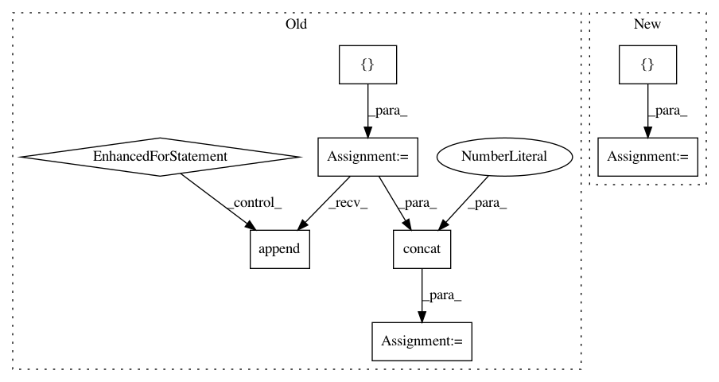

8aaabd6dfcd2f4ae5618ef08657bbba82e8bd69f,mesh_renderer/rasterize_triangles.py,,rasterize_clip_space,#Any#Any#Any#Any#Any#Any#,69
Before Change
batch_size = clip_space_vertices.shape[0].value
vertex_count = clip_space_vertices.shape[1].value
per_image_barycentric_coordinates = []
per_image_vertex_ids = []
for im in range(clip_space_vertices.shape[0]):
barycentric_coords, triangle_ids, _ = (
rasterize_triangles_module.rasterize_triangles(
clip_space_vertices[im, :, :], triangles, image_width,
image_height))
per_image_barycentric_coordinates.append(
tf.reshape(barycentric_coords, [-1, 3]))
// Gathers the vertex indices now because the indices don"t contain a batch
// identifier, and reindexes the vertex ids to point to a (batch,vertex_id)
vertex_ids = tf.gather(triangles, tf.reshape(triangle_ids, [-1]))
reindexed_ids = tf.add(vertex_ids, im * clip_space_vertices.shape[1].value)
per_image_vertex_ids.append(reindexed_ids)
barycentric_coordinates = tf.concat(per_image_barycentric_coordinates, axis=0)
vertex_ids = tf.concat(per_image_vertex_ids, axis=0)
// Indexes with each pixel"s clip-space triangle"s extrema (the pixel"s
// "corner points") ids to get the relevant properties for deferred shading.
After Change
_, per_image_barycentric_coordinates, per_image_vertex_ids = tf.while_loop(condition, iteration, [b, per_image_barycentric_coordinates, per_image_vertex_ids])
barycentric_coordinates = tf.reshape(per_image_barycentric_coordinates.stack(), [-1, 3])
vertex_ids = tf.reshape(per_image_vertex_ids.stack(), [-1, 3])
// Indexes with each pixel"s clip-space triangle"s extrema (the pixel"s
// "corner points") ids to get the relevant properties for deferred shading.
flattened_vertex_attributes = tf.reshape(attributes,
In pattern: SUPERPATTERN
Frequency: 3
Non-data size: 8
Instances
Project Name: google/tf_mesh_renderer
Commit Name: 8aaabd6dfcd2f4ae5618ef08657bbba82e8bd69f
Time: 2019-05-28
Author: david.erler@gmail.com
File Name: mesh_renderer/rasterize_triangles.py
Class Name:
Method Name: rasterize_clip_space
Project Name: dmlc/gluon-cv
Commit Name: ee602b6f68f0bdd19f449a86955697f8f0a2d54c
Time: 2019-09-21
Author: yizhu59@gmail.com
File Name: gluoncv/data/transforms/video.py
Class Name: VideoTenCrop
Method Name: forward
Project Name: google/tf_mesh_renderer
Commit Name: 8aaabd6dfcd2f4ae5618ef08657bbba82e8bd69f
Time: 2019-05-28
Author: david.erler@gmail.com
File Name: mesh_renderer/rasterize_triangles.py
Class Name:
Method Name: rasterize_clip_space
Project Name: broadinstitute/keras-rcnn
Commit Name: b540e054944fce7065635ac7891f65571ffc4d55
Time: 2017-06-10
Author: jujihong.cn@gmail.com
File Name: keras_rcnn/backend/tensorflow_backend.py
Class Name:
Method Name: crop_and_resize